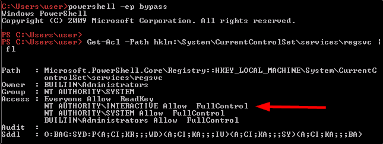

Overview of regsvc ACL
Here we are looking for a registry service, and we are looking for a full control over a register key:
We can compile a malicious executable (in .c) and make this executable run a command.
(like, add an user to the administrator group)
First of all, we need to see the ACL of the Machine (use Powershell)
Get-Acl -Path hklm:\System\CurrentControlSet\services\regsvc | fl
We can see that we have FullControl !!
